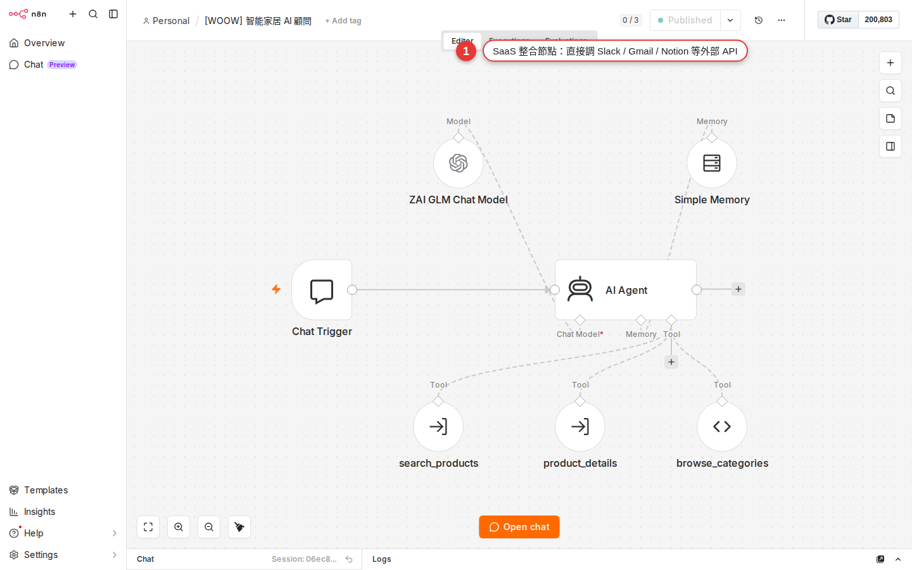

Popular SaaS integrations: Slack, Gmail, Google Sheets and Drive
90% of office automation revolves around these four: Slack for notifications, Gmail for mail, Google Sheets for records, Google Drive for storage. This chapter covers the node you will use most from each one, how to set up their credentials and the traps each one hides, then wires all four into one complete worked example: a new form entry sends an email, attaches a Drive file and posts to Slack.
Why every office worker needs these four
In Chapter 7 you saw the nine broad node categories, and in Chapter 8 you built your first workflow by hand. Back in a real office, though, here is what you run into:
- Your boss wants "a Slack message to the sales channel whenever a new customer arrives"
- Marketing wants "a Gmail thank-you note sent automatically when someone completes a Google Form"
- Admin wants "the CRM data backed up to Google Sheets every day"
- Design wants "files that customers upload filed automatically into their own folder on Google Drive"
These four have a near monopoly on the everyday tools of small and mid-sized offices. Learn how to set up their nodes and you have covered 80% of what work throws at you. The less common services that are left (Notion, Airtable, Zoom) work much the same way, or you can call their API yourself with the HTTP Request node from Chapter 12.
The shared idea: every SaaS node has three dropdowns
Whether it is Slack, Gmail or Google Sheets, once you open the node you always find three dropdown menus at the top. Get those three layers straight and you can drive all four:
| Dropdown level | What it is asking | Slack example | Gmail example |
|---|---|---|---|
| 1. Credential (the account) | Which account do you want to connect with? | Your personal Slack workspace, the company workspace | Your Gmail, the company Gmail |
| 2. Resource (the category) | Which kind of thing in this SaaS do you want to work on? | Message, Channel, User | Message, Draft, Label |
| 3. Operation (the action) | What do you want to do to that category? | Send, Update, Delete, Get | Send, Get Many, Reply, Delete |
This structure is the common language n8n designed for all of its SaaS nodes. Faced with a new node you do not know? Look first at which Resources it has and which Operations sit under each Resource, and you have the map of that node.
The Slack node: the office notification workhorse
Slack is the node people reach for most often in n8n when they want to tell someone something. Whether your boss is watching sales numbers, developers are watching CI or admin is watching orders, the Slack node is the fastest way to put a message in front of everyone.
The most-used Resource / Operation combinations
In n8n v1 the Slack node's full Resource list has seven entries: Channel, File, Message, Reaction, Star, User, User Group. The combinations you will use day to day:
| Resource | Operation | When to use it |
|---|---|---|
| Message | Send | Post a message to a channel or someone's DM (the most common) |
| Message | Get Many | Pull recent messages from a channel to search or analyze them |
| Message | Update | Edit a message you already sent (for example, change "In progress" to "Done") |
| User | Get | Look up a Slack user ID from an email address, so you can @ that person in a message |
| Channel | Create | Open a dedicated channel automatically for every new customer |
| File | Upload | Send a binary file to a channel |
| Reaction | Add | Add an emoji reaction to a message (for example, a check mark once it is handled) |
Two ways to do the credential
| Option | Setup effort | When to choose it |
|---|---|---|
| Slack API (Access Token) | Medium: you have to create an App in Slack first, take the Bot User OAuth Token (xoxb-…) or the User OAuth Token (xoxp-…) and paste it into the Access Token field |
You administer the workspace and want messages to go out under a fixed bot identity (use xoxb-); or you want them to go out as a real person (use xoxp-) |
| Slack OAuth2 API | Low: one click opens the authorization page and you just sign in with your account | You are an ordinary member of the workspace and want to post "as yourself" |
In the node's Authentication dropdown the two are called Access Token and OAuth2. The same Slack node can switch between them at will.
What you can type into the Text field
The Text field on Message → Send is not just plain text — Slack has its own markdown syntax:
| What you type | How it renders |
|---|---|
*important* | Bold (Slack uses one asterisk, not two) |
_italic_ | Italic |
~strikethrough~ | Strikethrough |
`code` | Inline code style |
<@U01ABC2DEF> | @-mention a user (by user ID, not by email) |
<#C01XYZ> | Link to a channel |
<!channel> | Notify the whole channel (it buzzes everyone's phone, so use it sparingly) |
What to do when you need to attach a file
Slack's Message → Send does not take binary attachments itself. To send a file, add a separate Slack → File → Upload node: pick the channel in Channel and put data in Input Data Field Name (matching the binary property from the node before it). The upload produces a message with the file on it. If you want text and a file at the same time, chain a Message Send node and a File Upload node together.
#general (the channel name, with the hash) or C01XYZ123 (the channel ID, which you get by right-clicking the Slack channel and copying the link). When a channel has been renamed, or its name contains Chinese characters, only the ID is reliable.The Gmail node: it all starts with sending mail
The Gmail node is the all-purpose tool for sending mail and fetching mail. Marketing sending thank-you notes, support sending replies, sales watching for a customer's answer — they all run on this node.
The most-used Resource / Operation combinations
| Resource | Operation | When to use it |
|---|---|---|
| Message | Send | Send a new email (the most common) |
| Message | Reply | Reply to an existing email (it keeps the thread) |
| Message | Get Many | Fetch mail from the inbox; pair it with Search to find a particular sender or subject |
| Message | Add Label | Label an email automatically to file it (Label is an operation that hangs off Message) |
| Draft | Create | Create a draft so a person confirms it before it goes out (for review workflows) |
| Label | Create | Create a new label (the Label resource only has Create/Delete/Get/Get Many — it has no Add of its own) |
Only one credential type: Google OAuth2
The Gmail node's credential only supports Google OAuth2. The first time you set it up a Google authorization page opens: sign in to your Google account and agree to read and write access for Gmail. The whole thing takes under 30 seconds. Chapter 13 goes into what OAuth is actually doing.
What Send can do
- Plain text or HTML: switch with the Email Type dropdown. With HTML you can paste a complete HTML document and design a styled email
- To / CC / BCC / Reply-To: all four recipient fields take several addresses (comma-separated)
- Attachments: the Binary Data toggle, with the property name matching the file the node before it produced
- A Subject built from an expression: the subject line can be assembled dynamically, for example
Order #{{ $json.order_id }} confirmed(expression syntax is in Chapter 14)
Fetching mail: all of Google's search syntax works here
The Filters block under Message → Get Many has a Search field (it is not called Filter, so do not go hunting for that). It takes exactly the syntax of the search bar in Gmail on the web:
| Search value | What it means |
|---|---|
is:unread | Unread only |
from:boss@company.com | Only what your boss sent |
subject:quote | Subject contains "quote" |
has:attachment | Has an attachment |
newer_than:1d | Mail from the last day |
from:@customer.com is:unread | Combined: unread mail from a customer domain |
The trigger version: the Gmail Trigger node
A separate node called Gmail Trigger (not Gmail) is the trigger node, and it can be set to run the workflow when new mail arrives. It is a polling node: the Poll Times dropdown offers Every Minute / Every Hour / Every Day and so on, and by default it pulls 10 messages at a time (Options → Limit takes that up to 50). Pick Every Minute if you want it near-instant, but polling that often on a large account will get you rate-limited by the Google API.
The Google Sheets node: the office's all-purpose database
For a lot of small and mid-sized companies, Google Sheets is the database. The CRM is a Sheet, the stock list is a Sheet, the event sign-up list is a Sheet. Learn this node and you have learned how to let n8n read and write the office's data.
The most-used Resource / Operation combinations
| Resource | Operation | When to use it |
|---|---|---|
| Sheet Within Document | Append Row | Add a row (the most common: a new customer into Sheets, an event logged) |
| Sheet Within Document | Append or Update Row | Update the row if the key you name already exists, append it if it does not (an upsert) |
| Sheet Within Document | Get Row(s) | Read the whole sheet, or the rows that match a condition (it is not called "Read", it is Get Row(s)) |
| Sheet Within Document | Update Row | Find a row with Column to Match On and update it |
| Sheet Within Document | Delete Rows or Columns | Delete the rows or columns you name (rarely used, and destructive) |
| Sheet Within Document | Clear | Empty the contents of a range but keep the column structure |
Two credential choices
| Option | When to choose it |
|---|---|
| Google OAuth2 | Individuals and small teams. Quick to set up, and you authorize with your own Google account |
| Service Account | The recommendation for companies. Create a machine account that is not a real person and share the Sheets you need with that machine email address. People leaving does not break the automation |
Append Row: add a row
Append Row is the operation you will use most. The settings that matter:
-
Pick the Document
The dropdown lists every Google Sheets file on your account, so just pick one. You can also paste a URL or a Sheet ID.
-
Pick the Sheet (the tab)
One Sheets file can hold several tabs, so pick the right one.
-
Set Mapping Column Mode to manual
The Mapping Column Mode dropdown has three options: Map Automatically (it fills the row on its own, as long as the keys in the upstream JSON match the Sheets headers exactly), Map Each Column Manually (you write an expression into each box yourself) and Nothing. When you are not sure the names line up, go manual — in automatic mode a single key with a different name leaves that column empty.
-
Fill in an expression per column
Below that, n8n lists every header in the Sheet (say "Name / Email / Signed up at") with an input box for each one, where you drop in an expression:
{{ $json.name }},{{ $json.email }},{{ $now }}.
Update: find a row and change it
The Update operation has one field that decides everything, Column to Match On, where you choose which column acts as the key for finding the row. For example: a customer status sheet keyed on Email, with upstream sending { email: "a@b.com", status: "paid" }. The Sheets node looks for the row whose Email column is a@b.com and sets its status column to "paid".
The Google Drive node: where the files live
The Drive node is mainly there to store files and to fetch them. Filing customer uploads automatically, putting a daily backup CSV in the cloud, downloading an attachment for the next node to use — all of that runs through this node.
The most-used Resource / Operation combinations
| Resource | Operation | When to use it |
|---|---|---|
| File | Upload | Store the previous node's binary in Drive |
| File | Download | Fetch a file's contents by file ID (it hands binary to the next node) |
| File | Copy | Copy it into another folder |
| File | Move | Move the file to a different folder |
| File | Share | Grant a sharing permission (for example, read access for one email address) |
| File | Create from Text | Create a file straight from a string of text (for example, save JSON as a .txt) |
| File/Folder | Search | Find files or folders by file name / MIME type (Search belongs to the combined File/Folder resource, not to File) |
| Folder | Create / Delete / Share | Folders have their own CRUD operations too |
| Shared Drive | Create / Get / Get Many / Update / Delete | Work on the shared drive itself, not on the files inside it |
Credential: Google OAuth2
The same as Gmail: you authorize with Google OAuth2. If you already set up a Gmail credential, you can pick that same one in the Drive node without authorizing again.
Upload: put a file into Drive
Upload needs three things:
| Field | What to enter |
|---|---|
| Input Data Field Name | The binary property name the node before it produced (usually data) |
| File Name | What it should be called once it is stored (an expression can build it dynamically) |
| Parent (Drive + Folder) | Which drive / folder to store it in — this is a Resource Locator field, with three modes you can switch between |
Three ways to fill in the Parent field (Resource Locator)
From n8n v1 on, the Drive and Folder fields on the Google Drive node are both Resource Locator (RLC) fields — one field with three modes to switch between:
| Mode | What to enter |
|---|---|
| From list | A dropdown lists every folder / drive in your Drive; just click one |
| By URL | Paste the folder URL, for example https://drive.google.com/drive/folders/1aBcDeFg…, and n8n pulls the ID out of it |
| By ID | Paste the folder ID directly (the string after folders/) |
All three get you the same result. What you cannot enter is the folder name — a name will not do, and anything that is not an ID, a URL or a pick from the list is rejected.
Download: pull a file out of Drive
Download needs only a File ID. The file ID usually comes from the node before it (Drive Search or a trigger, say), or you take it from the file's share link yourself: in the link drive.google.com/file/d/1xxx/view, the string in the middle is the file ID. The download hands binary downstream, for a Slack node to attach or a Gmail node to send with an email.
Worked example: a new form entry sends a Gmail, attaches a Drive file and posts to Slack
Wire all four services from this chapter into one real workflow. The scenario: a customer fills in a Google Form and uploads a file with it, and you want to send them a thank-you email automatically, attach the file they uploaded, and tell the sales channel on Slack that a new customer has come in.

-
Trigger: Google Forms Trigger or Google Sheets Trigger
Drop in a Google Sheets Trigger (most Google Forms write their responses into a Sheet automatically) and set it to fire when a new row appears. Set Trigger On to
Row Added, and use the RLC to point Document and Sheet at the Sheet holding the form responses. Every Minute is fine for Poll Times. -
Google Drive Download: fetch the file the customer uploaded
If the form has a file-upload question, that row in the Sheet holds a share link to a Drive file. Add a Google Drive → File → Download node and use an expression to pull the file ID out of the URL from the previous step:
{{ $json["Attachment"].split("id=")[1] }}. When this step finishes it emits binary, which the rest of the workflow can use as an attachment. -
Gmail Send: email the person who filled in the form
Add a Gmail → Message → Send node. Put
{{ $('Google Sheets Trigger').item.json["Email"] }}in the To field (referring to the Email column of the form from step one), type "Thank you for your submission - Hello {{ $('Google Sheets Trigger').item.json["Name"] }}" into Subject, and write your thank-you text into Message. Expand Options → Attachments and putdatain Property Name (Binary) — that sends the file downloaded from Drive in the previous step along with the email. -
Slack Message Send: tell the sales channel
Add a Slack → Message → Send node. Pick
#new-formsas the Channel (or its channel ID), and build the Text with an expression:*New form submission!*\nName: {{ $('Google Sheets Trigger').item.json["Name"] }}\nEmail: {{ $('Google Sheets Trigger').item.json["Email"] }}\nSubject: {{ $('Google Sheets Trigger').item.json["Subject"] }}\nThank-you email sent automatically :white_check_mark:. -
Save, then Execute Workflow to test it once
Save with Ctrl+S at the top right. Go and fill in the Google Form by hand with some fake data, come back to n8n and press Execute Workflow. Once all four nodes have turned green with a check, look in the mailbox to see whether the email arrived, and in Slack to see whether the notification landed.
-
Turn on the Activate toggle
Once the test is fine, flip the Active toggle at the top right. From that moment on, whenever anyone fills in the form, n8n runs this workflow for you.
Using several accounts on the same node
On n8n's Credentials page (in the left-hand menu) you can create several credentials of the same kind. For example:
Slack personal workspaceSlack company workspaceSlack customer A workspace
The Credential dropdown on each Slack node then lets you pick which one it uses. One workflow can even hold two Slack nodes on different workspaces — internal notices going to the company workspace, customer replies going to the customer's workspace, say. Gmail, Sheets and Drive work the same way.
Managing credentials in full — how to name them, how to share them, how to revoke them — is covered in Chapter 13.
Common pitfalls and fixes
| Symptom | Cause | How to fix it |
|---|---|---|
The Slack node returns 401 invalid_auth or not_authed |
The bot token has expired, or the bot was never invited into the channel you are posting to | Go back to the Slack workspace and add the bot to the channel: right-click the channel → View channel details → Integrations → Add app. If the token has expired, generate a new one and paste it back into the credential |
| Slack says the message was sent, but it is nowhere in the channel | You sent it to your own DM or to the wrong channel (you typed general instead of #general) |
Put the channel ID (C01XYZ) in the Channel field instead of the name — that goes wrong least often. Copy the ID from the bottom of the channel details page |
The Gmail node returns Insufficient Permission |
The OAuth grant did not include the send scope (you only ticked read, for instance) | Go to the credentials page, delete this Gmail OAuth credential and authorize again, this time ticking every checkbox on the consent screen |
| Gmail sends a lot of mail in one day and then suddenly stops sending | You went past Google's daily sending quota (500 a day on an ordinary account) | Wait 24 hours, or move to a Google Workspace account (2000 a day). For sustained bulk sending, switch to a dedicated sending service such as SendGrid or Postmark |
| The Sheets Append runs fine, but that row is missing some of its columns | You mistyped a column name while mapping, or the header in Sheets has a leading or trailing space; the capitalization has to match too | Go back to Sheets and check every cell in the header row for spaces. The column names in the n8n node have to match Sheets exactly, capitalization included |
| Sheets Update cannot find the row to update: the run reports no error but nothing changed | The column chosen in Column to Match has no matching value in Sheets — usually a type problem (Sheets holds the number 123 and you sent the string "123") |
Add a type conversion to the expression: {{ String($json.id) }}, or go the other way and set that Sheets column to plain text first |
| Drive Upload succeeds, but the file lands in the root of "My Drive" instead of the folder you named | The Parent field is in the wrong mode — left on By ID with a folder URL pasted in, or the reverse: left on By URL with a bare ID | Switching the RLC to From list and picking from the dropdown is safest; or use By URL and paste the full drive.google.com/drive/folders/…; the ID mode takes an ID and nothing else |
| The Drive node cannot see the files on a shared drive (Shared Drive) | Include Shared Drives is not ticked on the Google OAuth2 credential | Go back to the credential settings, tick that option and save, then return to the node and refresh the Document/Folder dropdown |
| There is clearly new mail, but the Gmail Trigger does not fire the workflow | Poll Times is on Every Hour or Every Day, so the wait is too long, or the Filters block (Sender, Label IDs, Read Status, Search) filtered the new mail out | Clear the Filters and set Poll Times to Every Minute to test; once you are sure the trigger reacts, add the filters back one at a time |
The run looks like a success, but a downstream node cannot read the field (undefined) |
The field names the SaaS node emits are not the ones you assumed (a Sheets column name with a full-width space in it, or Gmail's field being subject rather than Subject) |
Press Execute Node on the downstream node to see what the JSON actually looks like, and write the expression with its real field names |
FAQ
Do I have to use the official nodes? Can I write the API call myself?
I have two Slack workspaces, a personal one and the company one. What do I do?
Slack - Personal and Slack - Company). Each Slack node then lets you pick which one it uses. One workflow can even hold several Slack nodes on different workspaces — very handy indeed, notifying the customer's Slack and your internal Slack in one go.How many emails can Gmail send in a day?
@gmail.com) has a sending quota of 500 a day; a Google Workspace account (a company's own domain, for example @yourcompany.com) gets 2000. That is a hard limit on the Google account, not on n8n. If you are sending a newsletter or a large marketing blast, a dedicated email service such as SendGrid, Postmark or Mailgun is the sounder choice (tens of thousands a day), and n8n has nodes for those too.How many rows can Google Sheets read at once? Does a huge sheet break it?
A1:D1000, A1001:D2000); (2) if the data really is large, move to Airtable, Notion or an actual database (the Postgres / MySQL nodes).Will Drive Upload struggle with a large file, say a video of a few hundred MB?
How long does an OAuth grant last? Will it expire and need reconnecting?
401, and reauthorizing on the credentials page is all it takes. A Slack bot token has no expiry date, unless you revoke it yourself.